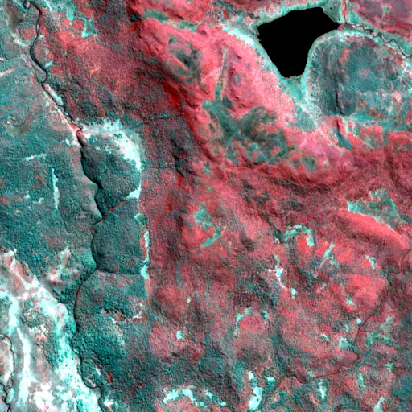

Benchmark / Near-lossless / s2-l1c-20m-6 / s2-l1c-20m-6-29
s2-l1c-20m-6-29
tasmania · 2023-09-19 · sample details

Metadata
| id | s2-l1c-20m-6-29 |
|---|---|
| source | COPERNICUS/S2 (Sentinel-2 MSI Level-1C) |
| asset | COPERNICUS/S2/20230919T001119_20230919T001428_T55GDP |
| crs | EPSG:32755 |
| transform | 453720.0 20.0 0.0 5355020.0 0.0 -20.0 |
| datetime_start | 2023-09-19T00:18:34.470Z |
| datetime_end | 2023-09-19T00:18:34.470Z |
| bands | B5|B6|B7|B8A|B11|B12 |
| shape | 6x512x512 |
| dtype | uint16 |
| unit | DN |
| scale | 1 |
| offset | 0 |
| nodata | 0 |
| input_sha256 | ab5b2a7386b196f9a65543fb77cad4b790c7aca6e66d8f3817171b701be67167 |
| site | tasmania |
| regime | tree |
| lon | 146.503 |
| lat | -42.002 |
| spacecraft | Sentinel-2B |
| mgrs_tile | 55GDP |
| processing_baseline | 05.09 |
| radio_add_offset | -1000|-1000|-1000|-1000|-1000|-1000 |